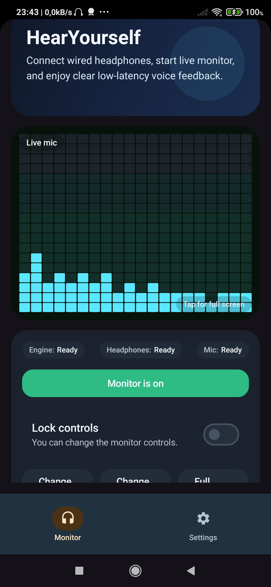
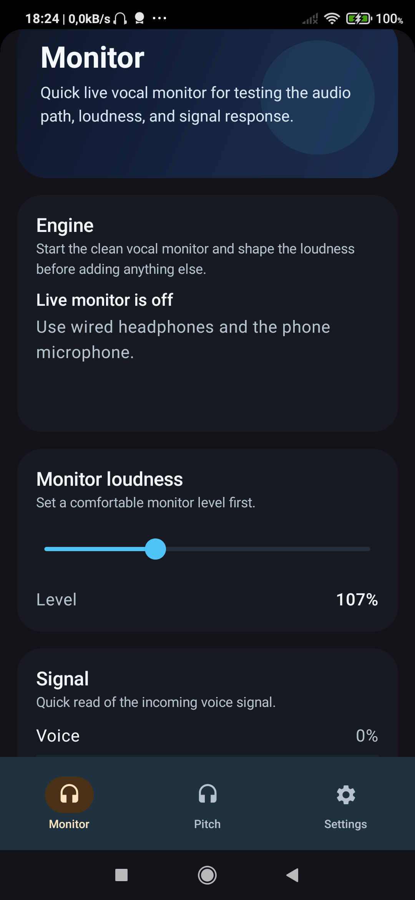
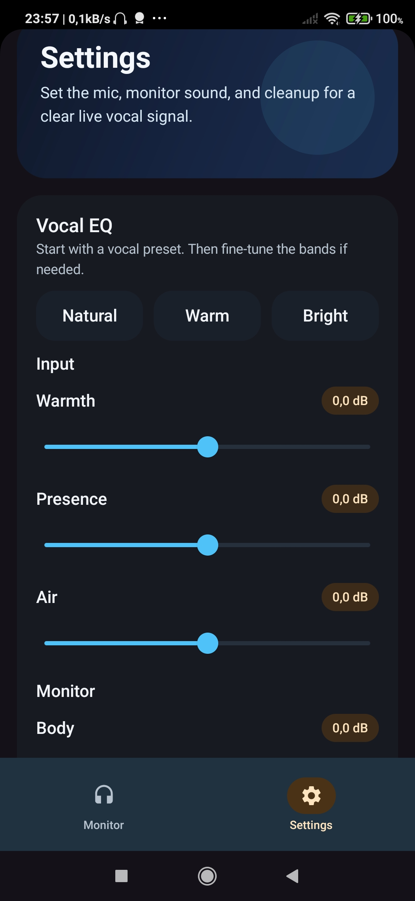
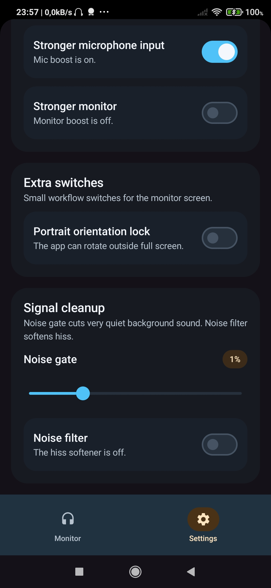

Low-Latency Live Vocal Monitor
Hear your voice live, clear, and fast.
HearYourself is built for singers who want a simple real-time vocal monitor with wired headphones, fast visual feedback, and a clean setup that stays focused on the voice.
- Low-latency live monitor
- Built for wired headphones
- Vocal-focused visualizer

Best use
Use wired headphones and the phone microphone for the cleanest real-time result.
Made for
Singing practice, warmups, vocal checks, and headphone monitoring on the go.
Interface
Minimal monitor screen, centered visualizer, fullscreen mode, and vocal-focused settings.
App Screens
Quick monitor workflow with strong visual feedback.


Simple Setup
Ready in a few seconds.
- Connect wired headphones.
- Open the Monitor screen.
- Start live monitor.
- Adjust EQ and cleanup if needed.
Why wired only?
HearYourself is designed around real-time voice monitoring. Wired headphones provide a much better latency path than Bluetooth or other delayed output options.